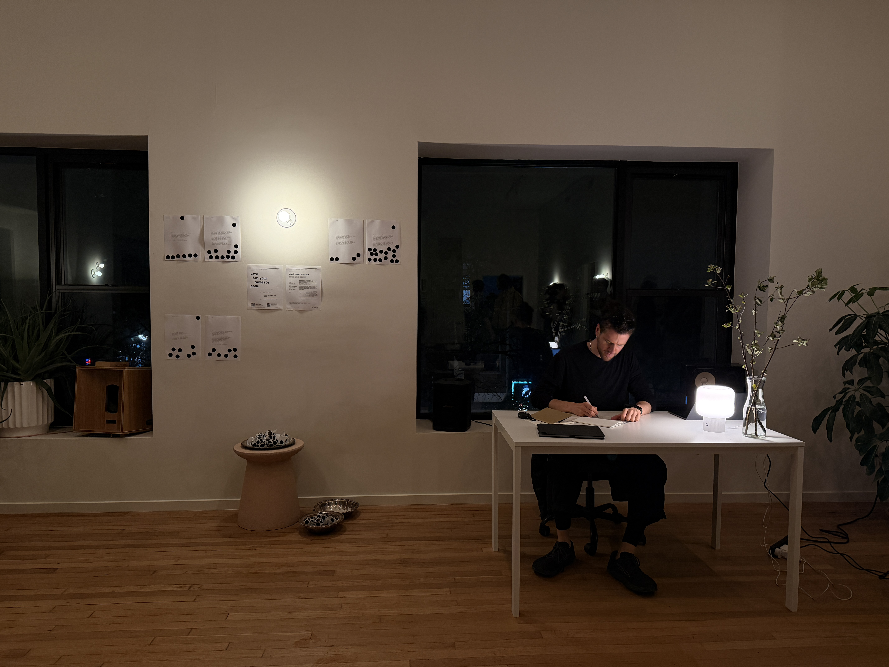

Singulars.exe (frontiere.exe)

A poetry duel set inside a coworking dinner. Every thirty minutes, the audience picks a theme. I write a poem in thirty minutes. A fine-tuned model writes another in three seconds. Both go on the wall side by side, A and B, with the side flipped each round. Guests are told one is human and one is machine. They are not told which. They place a black dot under the poem that moves them most.
This was frontiere.exe, the sixth model in the Singulars series, performed on May 13th, 2026 at an AI and policy dinner organized by Bianjie Systems in New York, held alongside Rhizome 7x7 and sponsored in part by Gray Area. About sixty guests at the cocktail hour, twenty-five at the table. A bicoastal room of researchers, policymakers, artists.
The themes that night included Liberation, Index, Aged, Tinder, Mortality, Dreams, Alchemy. The model spent thirty minutes worth of silence answering each one before I finished my pen stroke. From Aged: my grandmother kept her teeth in a jar by the bed and her husband in a song she hummed wrong on purpose. Mine. I am rooting for your medal shielding the eyes of the belly of time so she never finds your favorite trail. The model’s. Sometimes I could not tell either.
I gave a short talk that night about fridges. About how this is likely the first generation to have spent so much time with a technology that listens. About how refrigerators carve out silence the way a singer does when they stop. About how this strange combination of words, the song of fridges, is only possible because we have spent long enough with the thing to start hallucinating intimacy with it. The model and I have spent that long now too.
People ask two questions. The first I do not answer: Did AI write this? The point is not to win or be beaten. It is to explore another relational narrative with the model, closer to those old duels where warriors used to respect each other. The second, I will answer now: Who is winning? I am still winning. But I lose a bunch. And I can tell you there is humiliation. Sitting through this so many times, I have learned that humiliation and humility feel like two sides of the same coin.
This has felt like a school for poetry. A reverse Turing test, where I am the one trying to prove my humanity. Frontiere.exe now trains on what won and lost that night. The next model, the seventh, is already gathering itself out of those dots.